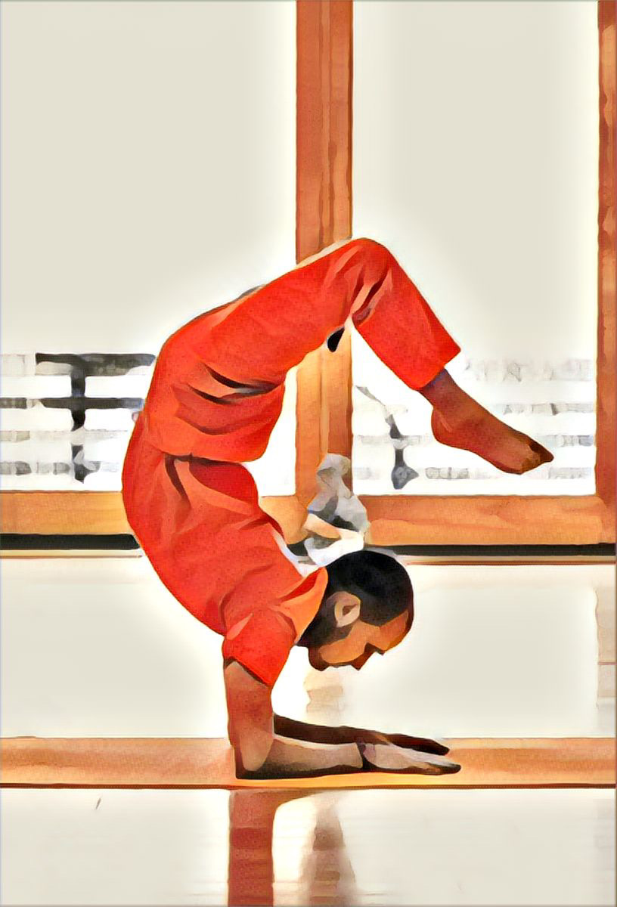

Sivananda Prayers
December 2, 2024I do Sivananda Yoga since over 30 years in Munich, yet still can’t remember the songs at the end of the yoga classes. So I collected them in order to have them in a printable manner.
The Om Tryambakam
Our classical song at the end of a class
Om Tryambakam Yajāmahe
Sugandhim Pusti Vardhanam
Urvā Rukam Iva Bhandhanān
Mrityor Muksīya Mā’mrtāt
(Repeat x3)
Om Sarvesām Svastir Bhavatu
Sarvesām Śāntir Bhavatu
Sarvesām Pūrnam Bhavatu
Sarvesām Mangalam Bhavatu
Sarve Bhavantu Sukhinah
Sarve Santu Nirāmayāh
Sarve Bhadrāni Paśyantu
Mā Kaschit Dhukha Bhāk Bhavet
Asato Mā Sat Gamaya
Tamaso Mā Jyotir Gamaya
Mrityor Mā Amrtam Gamaya
Om Pūrnamada Pūrnamidam
Pūrnāt Pūrnam Udachyate
Pūrnasya Pūrnam Ādāya
Pūrnamevāvaśisyate
Copied from here
